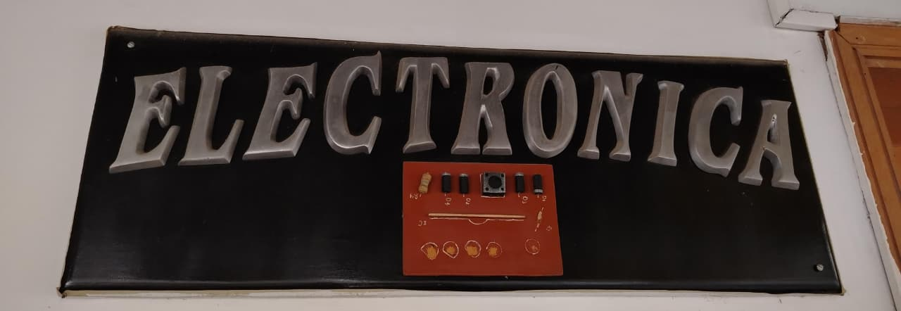
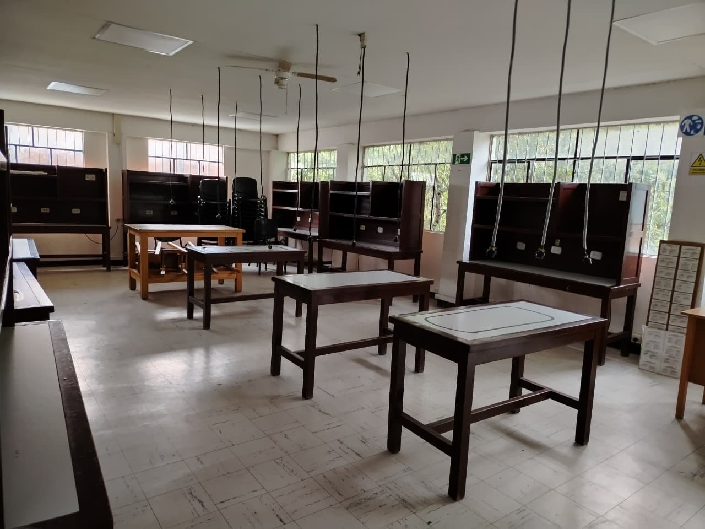

LICENCIATURA EN TECNOLOGÍA
LICENCIATURA EN TECNOLOGÍA
5. Laboratorio de Electrónica

¿Qué es un laboratorio de Electrónica en la UPTC?

Donde los estudiantes realizan prácticas para comprender, analizar, construir y comprobar el funcionamiento de diferentes circuitos y dispositivos electrónicos.
En este laboratorio se trabaja con componentes como resistencias, condensadores, diodos, transistores, circuitos integrados, sensores y microcontroladores, entre otros.
¿Qué se hace en un laboratorio de Electrónica?
En este espacio se pueden desarrollar diferentes prácticas relacionadas con la electrónica analógica, digital, instrumentación y control.
- Reconocimiento de componentes electrónicos.
- Construcción de circuitos electrónicos.
- Uso de instrumentos de medición electrónica.
- Electrónica análoga.
- Electrónica digital.
- Microcontroladores y tarjetas de desarrollo.
- Sensores y sistemas de instrumentación.